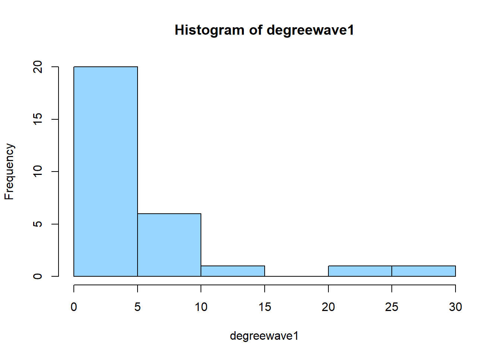

1 Setting up everything in the background
rm(list = ls())
packages = c("RSiena", "tidyverse", "stringdist", "stringi", "dplyr", "stringr")
require("magrittr")## Loading required package: magrittrlibrary(tidyverse)## Warning: package 'tidyverse' was built under R version 4.2.3## Warning: package 'ggplot2' was built under R version 4.2.3## Warning: package 'tibble' was built under R version 4.2.3## Warning: package 'tidyr' was built under R version 4.2.3## Warning: package 'readr' was built under R version 4.2.3## Warning: package 'purrr' was built under R version 4.2.3## Warning: package 'dplyr' was built under R version 4.2.3## Warning: package 'stringr' was built under R version 4.2.2## Warning: package 'forcats' was built under R version 4.2.3## Warning: package 'lubridate' was built under R version 4.2.3## ── Attaching core tidyverse packages ─────────────────────────── tidyverse 2.0.0 ──
## ✔ dplyr 1.1.3 ✔ readr 2.1.4
## ✔ forcats 1.0.0 ✔ stringr 1.5.0
## ✔ ggplot2 3.4.3 ✔ tibble 3.2.1
## ✔ lubridate 1.9.2 ✔ tidyr 1.3.0
## ✔ purrr 1.0.2## ── Conflicts ───────────────────────────────────────────── tidyverse_conflicts() ──
## ✖ lubridate::%--%() masks igraph::%--%()
## ✖ dplyr::as_data_frame() masks tibble::as_data_frame(), igraph::as_data_frame()
## ✖ purrr::compose() masks igraph::compose()
## ✖ tidyr::crossing() masks igraph::crossing()
## ✖ tidyr::extract() masks magrittr::extract()
## ✖ dplyr::filter() masks stats::filter()
## ✖ dplyr::groups() masks igraph::groups()
## ✖ dplyr::lag() masks stats::lag()
## ✖ purrr::set_names() masks magrittr::set_names()
## ✖ purrr::simplify() masks igraph::simplify()
## ℹ Use the conflicted package (<http://conflicted.r-lib.org/>) to force all conflicts to become errorslibrary(stringr)
library(RSiena)## Warning: package 'RSiena' was built under R version 4.2.3library(stringdist)## Warning: package 'stringdist' was built under R version 4.2.2##
## Attaching package: 'stringdist'
##
## The following object is masked from 'package:tidyr':
##
## extract
##
## The following object is masked from 'package:magrittr':
##
## extractlibrary(stringi)## Warning: package 'stringi' was built under R version 4.2.2library(dplyr)
library(stringr)
fpackage.check <- function(packages) {
lapply(packages, FUN = function(x) {
if (!require(x, character.only = TRUE)) {
install.packages(x, dependencies = TRUE)
library(x, character.only = TRUE)
}
})
}
fsave <- function(x, file = NULL, location = "./data/processed/") {
ifelse(!dir.exists("data"), dir.create("data"), FALSE)
ifelse(!dir.exists("data/processed"), dir.create("data/processed"), FALSE)
if (is.null(file))
file = deparse(substitute(x))
datename <- substr(gsub("[:-]", "", Sys.time()), 1, 8)
totalname <- paste(location, datename, file, ".rda", sep = "")
save(x, file = totalname) #need to fix if file is reloaded as input name, not as x.
}
fload <- function(filename) {
load(filename)
get(ls()[ls() != "filename"])
}
fshowdf <- function(x, ...) {
knitr::kable(x, digits = 2, "html", ...) %>%
kableExtra::kable_styling(bootstrap_options = c("striped", "hover")) %>%
kableExtra::scroll_box(width = "100%", height = "300px")
}
# this is the most important one. We created it in the previous script
f_pubnets <- function(df_scholars = df, list_publications = publications, discip = "sociology", affiliation = "RU",
waves = list(wave1 = c(2018, 2019), wave2 = c(2020, 2021), wave3 = c(2022, 2023))) {
publications <- list_publications %>%
dplyr::bind_rows() %>%
dplyr::distinct(title, .keep_all = TRUE)
df_scholars %>%
dplyr::filter(affil1 == affiliation | affil2 == affiliation) %>%
dplyr::filter(discipline == discip) -> df_sel
networklist <- list()
for (wave in 1:length(waves)) {
networklist[[wave]] <- matrix(0, nrow = nrow(df_sel), ncol = nrow(df_sel))
}
publicationlist <- list()
for (wave in 1:length(waves)) {
publicationlist[[wave]] <- publications %>%
filter(gs_id %in% df_sel$gs_id) %>%
filter(year %in% waves[[wave]]) %>%
dplyr::select(author) %>%
lapply(str_split, pattern = "," )
}
publicationlist2 <- list()
for (wave in 1:length(waves)) {
publicationlist2[[wave]] <- publicationlist[[wave]]$author %>%
# lowercase
lapply(tolower) %>%
# Removing diacritics
lapply(stri_trans_general, id = "latin-ascii") %>%
# only last name
lapply(word, start = -1, sep = " ") %>%
# only last last name
lapply(word, start = -1, sep = "-")
}
for (wave in 1:length(waves)) {
# let us remove all publications with only one author
remove <- which(sapply(publicationlist2[[wave]], FUN = function(x) length(x) == 1) == TRUE)
publicationlist2[[wave]] <- publicationlist2[[wave]][-remove]
}
for (wave in 1:length(waves)) {
pubs <- publicationlist2[[wave]]
for (ego in 1:nrow(df_sel)) {
# which ego?
lastname_ego <- df_sel$lastname[ego]
# for all publications
for (pub in 1:length(pubs)) {
# only continue if ego is author of pub
if (lastname_ego %in% pubs[[pub]]) {
aut_pot <- which.max(pubs[[pub]] %in% lastname_ego)
# only continue if ego is first author of pub
if (aut_pot == 1) {
# check all alters/co-authors
for (alter in 1:nrow(df_sel)) {
# which alter
lastname_alter <- df_sel$lastname[alter]
if (lastname_alter %in% pubs[[pub]]) {
networklist[[wave]][ego, alter] <- networklist[[wave]][ego, alter] + 1
}
}
}
}
}
}
}
return(list(df = df_sel, network = networklist))
}2 Merging datasets
total <- merge(df_soc, soc_df,by="gs_id")
view(total)
save(total,file="totaldata.Rda")3 getting the dataset ready
df <- fload("./Data/Data_processed/totaldata.rda")
publications <- fload("./Data/Data_processed/20230621list_publications_jt.rda")
output <- f_pubnets(df_scholars = df, list_publications = publications, discip = "sociology", affiliation = "RU",
waves = list(wave1 = c(2017, 2018, 2019), wave2 = c(2020, 2021, 2022)))
df_soc <- output[[1]]
df_network <- output[[2]]3.1 Matrices for different waves
3.1.1 Wave 1
library(igraph)
library(dplyr)
g1 <- graph.adjacency(df_network[[1]])
g1 <- get.edgelist(g1)
diag(g1) <- 0
edgelistwave1 <- data.frame(g1)
edgeswave1 <- as.matrix(edgelistwave1, rownames.force = TRUE) # matrix because igraph wants that
# Remove rows with negative node IDs
edgeswave1 - min(edgeswave1) + 1## X1 X2
## 1 1 2
## 2 2 1
## 3 2 2
## 4 2 2
## 5 2 2
## 6 2 2
## 7 2 2
## 8 2 2
## 9 2 2
## 10 2 2
## 11 2 9
## 12 2 9
## 13 2 9
## 14 2 9
## 15 2 9
## 16 2 12
## 17 2 12
## 18 2 12
## 19 2 12
## 20 2 12
## 21 3 3
## 22 3 3
## 23 3 3
## 24 3 4
## 25 3 4
## 26 3 12
## 27 3 15
## 28 3 15
## 29 3 15
## 30 5 5
## 31 6 6
## 32 6 6
## 33 6 15
## 34 6 15
## 35 7 7
## 36 8 8
## 37 8 8
## 38 8 8
## 39 8 8
## 40 8 17
## 41 8 17
## 42 8 17
## 43 9 9
## 44 9 9
## 45 9 9
## 46 9 12
## 47 10 10
## 48 10 10
## 49 10 10
## 50 10 10
## 51 10 12
## 52 10 15
## 53 10 15
## 54 10 15
## 55 10 15
## 56 10 26
## 57 10 26
## 58 10 26
## 59 11 9
## 60 11 9
## 61 11 11
## 62 11 11
## 63 11 11
## 64 11 11
## 65 11 11
## 66 11 11
## 67 11 11
## 68 11 11
## 69 11 11
## 70 11 11
## 71 11 11
## 72 11 15
## 73 11 15
## 74 11 15
## 75 11 15
## 76 11 15
## 77 11 15
## 78 11 15
## 79 11 15
## 80 11 17
## 81 11 17
## 82 11 17
## 83 11 17
## 84 11 17
## 85 11 17
## 86 11 17
## 87 11 17
## 88 11 17
## 89 11 17
## 90 11 22
## 91 11 22
## 92 11 22
## 93 11 22
## 94 11 22
## 95 11 22
## 96 12 12
## 97 12 22
## 98 14 14
## 99 14 14
## 100 15 10
## 101 15 10
## 102 15 15
## 103 15 15
## 104 15 15
## 105 15 15
## 106 15 15
## 107 15 15
## 108 15 23
## 109 15 23
## 110 16 15
## 111 16 15
## 112 16 16
## 113 16 16
## 114 16 16
## 115 16 16
## 116 16 16
## 117 16 16
## 118 16 16
## 119 16 16
## 120 16 16
## 121 17 17
## 122 18 18
## 123 18 18
## 124 19 19
## 125 19 19
## 126 19 19
## 127 20 4
## 128 20 20
## 129 20 20
## 130 21 21
## 131 21 21
## 132 22 22
## 133 23 23
## 134 23 23
## 135 23 23
## 136 23 23
## 137 23 23
## 138 23 23
## 139 23 23
## 140 23 23
## 141 23 23
## 142 23 23
## 143 23 23
## 144 23 23
## 145 25 20
## 146 25 25
## 147 25 25
## 148 26 26
## 149 26 26
## 150 26 26
## 151 29 4
## 152 29 4
## 153 29 9
## 154 29 29
## 155 29 29
## 156 30 15
## 157 30 15
## 158 30 30
## 159 30 30
## 160 30 30
## 161 30 30# Shift node IDs to start from 1
edgeswave1 <- edgeswave1 - min(edgeswave1) + 1
net1 <- graph_from_edgelist(edgeswave1, directed = TRUE) # Notice the igraph function here!
plot(net1)
df_soc$RID <- 1:nrow(df_soc)
# saver way to get columns by name
rid_gender_column_names <- grep("RID|gender", names(df_soc), value = TRUE)
print(rid_gender_column_names)## [1] "gender.x" "gender.y" "genderman" "RID"onlyRU <- dplyr::left_join(edgelistwave1, df_soc[, rid_gender_column_names], by = c("X1" = "RID"))
onlyRU <- dplyr::left_join(onlyRU, df_soc[, rid_gender_column_names], by = c("X2" = "RID"))3.1.2 Wave 1
library(igraph)
library(dplyr)
g1 <- graph.adjacency(df_network[[1]])
g1 <- get.edgelist(g1)
diag(g1) <- 0
edgelistwave1 <- data.frame(g1)
edgeswave1 <- as.matrix(edgelistwave1) # matrix because igraph wants that
net1 <- graph_from_edgelist(edgeswave1, directed = TRUE) # Notice the igraph function here!
plot(net1)
df_soc$RID <- 1:nrow(df_soc)
onlyRU <- left_join(edgelistwave1, df_soc[, c("RID", "gender.y")], by = c ("X1" = "RID"))
onlyRU <- left_join(onlyRU, df_soc[, c("RID", "gender.y")], by = c ("X2" = "RID"))3.1.3 wave 2
g2 <- graph.adjacency(df_network[[2]])
g2 <- get.edgelist(g2)
# diag(g2) <- 0
edgelistwave2 <- data.frame(g2)
edgeswave2 <- as.matrix(edgelistwave2)
net2 <- graph_from_edgelist(edgeswave2, directed = TRUE)
plot(net2)
ecount(net2)## [1] 154vcount(net2)## [1] 29df_soc$RID <- 1:nrow(df_soc)
onlyRU2 <- left_join(edgelistwave2, df_soc[, c("RID", "gender.y")], by = c ("X1" = "RID"))
onlyRU2 <- left_join(onlyRU2, df_soc[, c("RID", "gender.y")], by = c ("X2" = "RID"))3.2 Making gender homophily variable
3.2.1 Wave 1
onlyRU$gendersimilar <- NA
onlyRU$gendersimilar[onlyRU$gender.y.x == "man" & onlyRU$gender.y.y == "man"] <- 1
onlyRU$gendersimilar[onlyRU$gender.y.x == "woman" & onlyRU$gender.y.y == "woman"] <- 1
onlyRU$gendersimilar[onlyRU$gender.y.x == "man" & onlyRU$gender.y.y == "woman" ] <- 0
onlyRU$gendersimilar[onlyRU$gender.y.x == "woman" & onlyRU$gender.y.y == "man" ] <- 0
summary(onlyRU$gendersimilar)## Min. 1st Qu. Median Mean 3rd Qu. Max. NA's
## 0.0000 1.0000 1.0000 0.8491 1.0000 1.0000 2onlyRU$percentageww <- NA
onlyRU$percentageww[onlyRU$gender.y.x == "woman" & onlyRU$gender.y.y == "man"] <- 0
onlyRU$percentageww[onlyRU$gender.y.x == "woman" & onlyRU$gender.y.y == "woman"] <- 1
onlyRU$percentageww[onlyRU$gender.y.x == "man" & onlyRU$gender.y.y == "man"] <- NA
onlyRU$percentageww[onlyRU$gender.y.x == "man" & onlyRU$gender.y.y == "woman"] <- NA
summary(onlyRU$percentageww)## Min. 1st Qu. Median Mean 3rd Qu. Max. NA's
## 0.0 0.0 1.0 0.6 1.0 1.0 106onlyRU$percentagemm <- NA
onlyRU$percentagemm[onlyRU$gender.y.x == "man" & onlyRU$gender.y.y == "man"] <- 1
onlyRU$percentagemm[onlyRU$gender.y.x == "man" & onlyRU$gender.y.y == "woman"] <- 0
onlyRU$percentagemm[onlyRU$gender.y.x == "woman" & onlyRU$gender.y.y == "man"] <- NA
onlyRU$percentagemm[onlyRU$gender.y.x == "woman" & onlyRU$gender.y.y == "woman"] <- NA
summary(onlyRU$percentagemm)## Min. 1st Qu. Median Mean 3rd Qu. Max. NA's
## 0.0000 1.0000 1.0000 0.9808 1.0000 1.0000 573.2.2 Wave 2
onlyRU2$gendersimilar2 <- NA
onlyRU2$gendersimilar2[onlyRU2$gender.y.x == "man" & onlyRU2$gender.y.y == "man"] <- 1
onlyRU2$gendersimilar2[onlyRU2$gender.y.x == "woman" & onlyRU2$gender.y.y == "woman"] <- 1
onlyRU2$gendersimilar2[onlyRU2$gender.y.x == "man" & onlyRU2$gender.y.y == "woman" ] <- 0
onlyRU2$gendersimilar2[onlyRU2$gender.y.x == "woman" & onlyRU2$gender.y.y == "man" ] <- 0
onlyRU2$percentagemm2[onlyRU2$X1 == onlyRU2$X2] <- NA
summary(onlyRU2$gendersimilar2)## Min. 1st Qu. Median Mean 3rd Qu. Max.
## 0.0000 0.0000 1.0000 0.7078 1.0000 1.0000onlyRU2$percentageww2 <- NA
onlyRU2$percentageww2[onlyRU2$gender.y.x == "man" & onlyRU2$gender.y.y == "man"] <- NA
onlyRU2$percentageww2[onlyRU2$gender.y.x == "woman" & onlyRU2$gender.y.y == "woman"] <- 1
onlyRU2$percentageww2[onlyRU2$gender.y.x == "man" & onlyRU2$gender.y.y == "woman" ] <- NA
onlyRU2$percentageww2[onlyRU2$gender.y.x == "woman" & onlyRU2$gender.y.y == "man" ] <- 0
onlyRU2$percentagemm2[onlyRU2$X1 == onlyRU2$X2] <- NA
summary(onlyRU2$percentageww2)## Min. 1st Qu. Median Mean 3rd Qu. Max. NA's
## 0.0000 0.0000 1.0000 0.5979 1.0000 1.0000 57onlyRU2$percentagemm2 <- NA
onlyRU2$percentagemm2[onlyRU2$gender.y.x == "man" & onlyRU2$gender.y.y == "man"] <- 1
onlyRU2$percentagemm2[onlyRU2$gender.y.x == "woman" & onlyRU2$gender.y.y == "woman"] <- NA
onlyRU2$percentagemm2[onlyRU2$gender.y.x == "man" & onlyRU2$gender.y.y == "woman" ] <- 0
onlyRU2$percentagemm2[onlyRU2$gender.y.x == "woman" & onlyRU2$gender.y.y == "man" ] <- NA
onlyRU2$percentagemm2[onlyRU2$X1 == onlyRU2$X2] <- NA
summary(onlyRU2$percentagemm2)## Min. 1st Qu. Median Mean 3rd Qu. Max. NA's
## 0.0000 0.0000 1.0000 0.6471 1.0000 1.0000 1373.3 Getting descriptive statistics
summary(onlyRU$gendersimilar)## Min. 1st Qu. Median Mean 3rd Qu. Max. NA's
## 0.0000 1.0000 1.0000 0.8491 1.0000 1.0000 2summary(onlyRU2$gendersimilar2)## Min. 1st Qu. Median Mean 3rd Qu. Max.
## 0.0000 0.0000 1.0000 0.7078 1.0000 1.0000ecount(net1)## [1] 161vcount(net1)## [1] 30ecount(net2)## [1] 154vcount(net2)## [1] 29degreewave1 <- igraph::degree(net1)
degreewave2 <- igraph::degree(net2)3.4 Histogram of the number of degree in wave 1
#par(mfrow=c(3,1))
hist(degreewave1, col="#99d6ff") ## Histogram of the number of degree in wave 2
hist(degreewave2, col="#99d6ff")3.5 Network statistics wave 1 (dyad/triad/density)
igraph::dyad.census(net1)## $mut
## [1] 2
##
## $asym
## [1] 22
##
## $null
## [1] 411igraph::triad.census(net1)## [1] 3446 165 392 11 23 12 5 5 1 0 0 0 0 0 0 0igraph::edge_density(net1)## [1] 0.18505753.6 Network statistics wave 2 (dyad/triad/density)
igraph::dyad.census(net2)## $mut
## [1] 3
##
## $asym
## [1] 27
##
## $null
## [1] 376igraph::triad.census(net2)## [1] 2914 314 359 14 21 18 6 4 1 0 1 2 0 0 0 0igraph::edge_density(net2)## [1] 0.18965523.7 Transitivity wave 1
igraph::transitivity(net1)## [1] 0.050847463.8 Transitivity wave 2
igraph::transitivity(net2)## [1] 0.12328773.9 Descriptive statistics of the control variables
hist(df$num_pubs, col="#99d6ff")
hist(df$career_age, col="#99d6ff")summary(df$career_age)## Min. 1st Qu. Median Mean 3rd Qu. Max.
## 2.00 6.00 10.00 14.34 18.00 51.00hist(df$num_coauth, col="#99d6ff")summary(df$num_coauth)## Min. 1st Qu. Median Mean 3rd Qu. Max.
## 0.00 0.00 6.00 13.14 16.00 75.00df$freq0 <- df$Freq
df$freq0[is.na(df$freq0)] <- 0
hist(df$freq0, col="#99d6ff")
summary(df$freq0)## Min. 1st Qu. Median Mean 3rd Qu. Max.
## 0.000 0.000 1.000 4.103 7.000 22.0003.10 Network statistics - Still to do
3.11 RSiena Models
3.11.1 Dependent variable
# Number of waves
length(df_network)## [1] 23.11.2 Independent variables
DQojIFNldHRpbmcgdXAgZXZlcnl0aGluZyBpbiB0aGUgYmFja2dyb3VuZA0KYGBge3J9DQpybShsaXN0ID0gbHMoKSkNCg0KDQpwYWNrYWdlcyA9IGMoIlJTaWVuYSIsICJ0aWR5dmVyc2UiLCAic3RyaW5nZGlzdCIsICJzdHJpbmdpIiwgImRwbHlyIiwgInN0cmluZ3IiKQ0KDQpyZXF1aXJlKCJtYWdyaXR0ciIpDQpsaWJyYXJ5KHRpZHl2ZXJzZSkNCmxpYnJhcnkoc3RyaW5ncikNCmxpYnJhcnkoUlNpZW5hKQ0KbGlicmFyeShzdHJpbmdkaXN0KQ0KbGlicmFyeShzdHJpbmdpKQ0KbGlicmFyeShkcGx5cikNCmxpYnJhcnkoc3RyaW5ncikNCg0KZnBhY2thZ2UuY2hlY2sgPC0gZnVuY3Rpb24ocGFja2FnZXMpIHsNCiAgICBsYXBwbHkocGFja2FnZXMsIEZVTiA9IGZ1bmN0aW9uKHgpIHsNCiAgICAgICAgaWYgKCFyZXF1aXJlKHgsIGNoYXJhY3Rlci5vbmx5ID0gVFJVRSkpIHsNCiAgICAgICAgICAgIGluc3RhbGwucGFja2FnZXMoeCwgZGVwZW5kZW5jaWVzID0gVFJVRSkNCiAgICAgICAgICAgIGxpYnJhcnkoeCwgY2hhcmFjdGVyLm9ubHkgPSBUUlVFKQ0KICAgICAgICB9DQogICAgfSkNCn0NCg0KZnNhdmUgPC0gZnVuY3Rpb24oeCwgZmlsZSA9IE5VTEwsIGxvY2F0aW9uID0gIi4vZGF0YS9wcm9jZXNzZWQvIikgew0KICAgIGlmZWxzZSghZGlyLmV4aXN0cygiZGF0YSIpLCBkaXIuY3JlYXRlKCJkYXRhIiksIEZBTFNFKQ0KICAgIGlmZWxzZSghZGlyLmV4aXN0cygiZGF0YS9wcm9jZXNzZWQiKSwgZGlyLmNyZWF0ZSgiZGF0YS9wcm9jZXNzZWQiKSwgRkFMU0UpDQogICAgaWYgKGlzLm51bGwoZmlsZSkpDQogICAgICAgIGZpbGUgPSBkZXBhcnNlKHN1YnN0aXR1dGUoeCkpDQogICAgZGF0ZW5hbWUgPC0gc3Vic3RyKGdzdWIoIls6LV0iLCAiIiwgU3lzLnRpbWUoKSksIDEsIDgpDQogICAgdG90YWxuYW1lIDwtIHBhc3RlKGxvY2F0aW9uLCBkYXRlbmFtZSwgZmlsZSwgIi5yZGEiLCBzZXAgPSAiIikNCiAgICBzYXZlKHgsIGZpbGUgPSB0b3RhbG5hbWUpICAjbmVlZCB0byBmaXggaWYgZmlsZSBpcyByZWxvYWRlZCBhcyBpbnB1dCBuYW1lLCBub3QgYXMgeC4gDQp9DQoNCmZsb2FkIDwtIGZ1bmN0aW9uKGZpbGVuYW1lKSB7DQogICAgbG9hZChmaWxlbmFtZSkNCiAgICBnZXQobHMoKVtscygpICE9ICJmaWxlbmFtZSJdKQ0KfQ0KDQpmc2hvd2RmIDwtIGZ1bmN0aW9uKHgsIC4uLikgew0KICAgIGtuaXRyOjprYWJsZSh4LCBkaWdpdHMgPSAyLCAiaHRtbCIsIC4uLikgJT4lDQogICAgICAgIGthYmxlRXh0cmE6OmthYmxlX3N0eWxpbmcoYm9vdHN0cmFwX29wdGlvbnMgPSBjKCJzdHJpcGVkIiwgImhvdmVyIikpICU+JQ0KICAgICAgICBrYWJsZUV4dHJhOjpzY3JvbGxfYm94KHdpZHRoID0gIjEwMCUiLCBoZWlnaHQgPSAiMzAwcHgiKQ0KfQ0KDQoNCg0KIyB0aGlzIGlzIHRoZSBtb3N0IGltcG9ydGFudCBvbmUuIFdlIGNyZWF0ZWQgaXQgaW4gdGhlIHByZXZpb3VzIHNjcmlwdA0KDQpmX3B1Ym5ldHMgPC0gZnVuY3Rpb24oZGZfc2Nob2xhcnMgPSBkZiwgbGlzdF9wdWJsaWNhdGlvbnMgPSBwdWJsaWNhdGlvbnMsIGRpc2NpcCA9ICJzb2Npb2xvZ3kiLCBhZmZpbGlhdGlvbiA9ICJSVSIsDQogICAgd2F2ZXMgPSBsaXN0KHdhdmUxID0gYygyMDE4LCAyMDE5KSwgd2F2ZTIgPSBjKDIwMjAsIDIwMjEpLCB3YXZlMyA9IGMoMjAyMiwgMjAyMykpKSB7DQoNCiAgICBwdWJsaWNhdGlvbnMgPC0gbGlzdF9wdWJsaWNhdGlvbnMgJT4lDQogICAgICAgIGRwbHlyOjpiaW5kX3Jvd3MoKSAlPiUNCiAgICAgICAgZHBseXI6OmRpc3RpbmN0KHRpdGxlLCAua2VlcF9hbGwgPSBUUlVFKQ0KDQogICAgZGZfc2Nob2xhcnMgJT4lDQogICAgICAgIGRwbHlyOjpmaWx0ZXIoYWZmaWwxID09IGFmZmlsaWF0aW9uIHwgYWZmaWwyID09IGFmZmlsaWF0aW9uKSAlPiUNCiAgICAgICAgZHBseXI6OmZpbHRlcihkaXNjaXBsaW5lID09IGRpc2NpcCkgLT4gZGZfc2VsDQoNCiAgICBuZXR3b3JrbGlzdCA8LSBsaXN0KCkNCiAgICBmb3IgKHdhdmUgaW4gMTpsZW5ndGgod2F2ZXMpKSB7DQogICAgICAgIG5ldHdvcmtsaXN0W1t3YXZlXV0gPC0gbWF0cml4KDAsIG5yb3cgPSBucm93KGRmX3NlbCksIG5jb2wgPSBucm93KGRmX3NlbCkpDQogICAgfQ0KDQogICAgcHVibGljYXRpb25saXN0IDwtIGxpc3QoKQ0KICAgIGZvciAod2F2ZSBpbiAxOmxlbmd0aCh3YXZlcykpIHsNCiAgICAgICAgcHVibGljYXRpb25saXN0W1t3YXZlXV0gPC0gcHVibGljYXRpb25zICU+JQ0KICAgICAgICAgICAgZmlsdGVyKGdzX2lkICVpbiUgZGZfc2VsJGdzX2lkKSAlPiUNCiAgICAgICAgICAgIGZpbHRlcih5ZWFyICVpbiUgd2F2ZXNbW3dhdmVdXSkgJT4lDQogICAgICAgICAgICBkcGx5cjo6c2VsZWN0KGF1dGhvcikgJT4lDQogICAgICAgICAgICBsYXBwbHkoc3RyX3NwbGl0LCBwYXR0ZXJuID0gIiwiICkNCiAgICB9DQoNCiAgICBwdWJsaWNhdGlvbmxpc3QyIDwtIGxpc3QoKQ0KICAgIGZvciAod2F2ZSBpbiAxOmxlbmd0aCh3YXZlcykpIHsNCiAgICAgICAgcHVibGljYXRpb25saXN0Mltbd2F2ZV1dIDwtIHB1YmxpY2F0aW9ubGlzdFtbd2F2ZV1dJGF1dGhvciAlPiUNCiAgICAgICAgICAgICMgbG93ZXJjYXNlDQogICAgICAgIGxhcHBseSh0b2xvd2VyKSAlPiUNCiAgICAgICAgICAgICMgUmVtb3ZpbmcgZGlhY3JpdGljcw0KICAgICAgICBsYXBwbHkoc3RyaV90cmFuc19nZW5lcmFsLCBpZCA9ICJsYXRpbi1hc2NpaSIpICU+JQ0KICAgICAgICAgICAgIyBvbmx5IGxhc3QgbmFtZQ0KICAgICAgICBsYXBwbHkod29yZCwgc3RhcnQgPSAtMSwgc2VwID0gIiAiKSAlPiUNCiAgICAgICAgICAgICMgb25seSBsYXN0IGxhc3QgbmFtZQ0KICAgICAgICBsYXBwbHkod29yZCwgc3RhcnQgPSAtMSwgc2VwID0gIi0iKQ0KICAgIH0NCg0KICAgIGZvciAod2F2ZSBpbiAxOmxlbmd0aCh3YXZlcykpIHsNCiAgICAgICAgIyBsZXQgdXMgcmVtb3ZlIGFsbCBwdWJsaWNhdGlvbnMgd2l0aCBvbmx5IG9uZSBhdXRob3INCiAgICAgICAgcmVtb3ZlIDwtIHdoaWNoKHNhcHBseShwdWJsaWNhdGlvbmxpc3QyW1t3YXZlXV0sIEZVTiA9IGZ1bmN0aW9uKHgpIGxlbmd0aCh4KSA9PSAxKSA9PSBUUlVFKQ0KICAgICAgICBwdWJsaWNhdGlvbmxpc3QyW1t3YXZlXV0gPC0gcHVibGljYXRpb25saXN0Mltbd2F2ZV1dWy1yZW1vdmVdDQogICAgfQ0KDQogICAgZm9yICh3YXZlIGluIDE6bGVuZ3RoKHdhdmVzKSkgew0KICAgICAgICBwdWJzIDwtIHB1YmxpY2F0aW9ubGlzdDJbW3dhdmVdXQ0KICAgICAgICBmb3IgKGVnbyBpbiAxOm5yb3coZGZfc2VsKSkgew0KICAgICAgICAgICAgIyB3aGljaCBlZ28/DQogICAgICAgICAgICBsYXN0bmFtZV9lZ28gPC0gZGZfc2VsJGxhc3RuYW1lW2Vnb10NCiAgICAgICAgICAgICMgZm9yIGFsbCBwdWJsaWNhdGlvbnMNCiAgICAgICAgICAgIGZvciAocHViIGluIDE6bGVuZ3RoKHB1YnMpKSB7DQogICAgICAgICAgICAgICAgIyBvbmx5IGNvbnRpbnVlIGlmIGVnbyBpcyBhdXRob3Igb2YgcHViDQogICAgICAgICAgICAgICAgaWYgKGxhc3RuYW1lX2VnbyAlaW4lIHB1YnNbW3B1Yl1dKSB7DQogICAgICAgICAgICAgICAgICBhdXRfcG90IDwtIHdoaWNoLm1heChwdWJzW1twdWJdXSAlaW4lIGxhc3RuYW1lX2VnbykNCiAgICAgICAgICAgICAgICAgICMgb25seSBjb250aW51ZSBpZiBlZ28gaXMgZmlyc3QgYXV0aG9yIG9mIHB1Yg0KICAgICAgICAgICAgICAgICAgaWYgKGF1dF9wb3QgPT0gMSkgew0KICAgICAgICAgICAgICAgICAgICAjIGNoZWNrIGFsbCBhbHRlcnMvY28tYXV0aG9ycw0KICAgICAgICAgICAgICAgICAgICBmb3IgKGFsdGVyIGluIDE6bnJvdyhkZl9zZWwpKSB7DQogICAgICAgICAgICAgICAgICAgICAgIyB3aGljaCBhbHRlcg0KICAgICAgICAgICAgICAgICAgICAgIGxhc3RuYW1lX2FsdGVyIDwtIGRmX3NlbCRsYXN0bmFtZVthbHRlcl0NCiAgICAgICAgICAgICAgICAgICAgICBpZiAobGFzdG5hbWVfYWx0ZXIgJWluJSBwdWJzW1twdWJdXSkgew0KICAgICAgICAgICAgICAgICAgICAgICAgbmV0d29ya2xpc3RbW3dhdmVdXVtlZ28sIGFsdGVyXSA8LSBuZXR3b3JrbGlzdFtbd2F2ZV1dW2VnbywgYWx0ZXJdICsgMQ0KICAgICAgICAgICAgICAgICAgICAgIH0NCiAgICAgICAgICAgICAgICAgICAgfQ0KICAgICAgICAgICAgICAgICAgfQ0KICAgICAgICAgICAgICAgIH0NCiAgICAgICAgICAgIH0NCiAgICAgICAgfQ0KICAgIH0NCiAgICByZXR1cm4obGlzdChkZiA9IGRmX3NlbCwgbmV0d29yayA9IG5ldHdvcmtsaXN0KSkNCn0NCg0KYGBgDQoNCg0KIyBNZXJnaW5nIGRhdGFzZXRzDQoNCmBgYHtyLCBldmFsPUZBTFNFfQ0KdG90YWwgPC0gbWVyZ2UoZGZfc29jLCBzb2NfZGYsYnk9ImdzX2lkIikNCnZpZXcodG90YWwpDQoNCnNhdmUodG90YWwsZmlsZT0idG90YWxkYXRhLlJkYSIpDQoNCmBgYA0KDQoNCg0KDQojIGdldHRpbmcgdGhlIGRhdGFzZXQgcmVhZHkNCmBgYHtyfQ0KZGYgPC0gZmxvYWQoIi4vRGF0YS9EYXRhX3Byb2Nlc3NlZC90b3RhbGRhdGEucmRhIikNCnB1YmxpY2F0aW9ucyA8LSBmbG9hZCgiLi9EYXRhL0RhdGFfcHJvY2Vzc2VkLzIwMjMwNjIxbGlzdF9wdWJsaWNhdGlvbnNfanQucmRhIikNCg0KDQpvdXRwdXQgPC0gZl9wdWJuZXRzKGRmX3NjaG9sYXJzID0gZGYsIGxpc3RfcHVibGljYXRpb25zID0gcHVibGljYXRpb25zLCBkaXNjaXAgPSAic29jaW9sb2d5IiwgYWZmaWxpYXRpb24gPSAiUlUiLA0KICAgIHdhdmVzID0gbGlzdCh3YXZlMSA9IGMoMjAxNywgMjAxOCwgMjAxOSksIHdhdmUyID0gYygyMDIwLCAyMDIxLCAyMDIyKSkpDQoNCmRmX3NvYyA8LSBvdXRwdXRbWzFdXQ0KZGZfbmV0d29yayA8LSBvdXRwdXRbWzJdXQ0KYGBgDQoNCiMjIE1hdHJpY2VzIGZvciBkaWZmZXJlbnQgd2F2ZXMNCg0KDQoNCiMjIyBXYXZlIDENCmBgYHtyfQ0KDQpsaWJyYXJ5KGlncmFwaCkNCmxpYnJhcnkoZHBseXIpDQoNCmcxIDwtIGdyYXBoLmFkamFjZW5jeShkZl9uZXR3b3JrW1sxXV0pDQpnMSA8LSBnZXQuZWRnZWxpc3QoZzEpDQoNCmRpYWcoZzEpIDwtIDANCg0KZWRnZWxpc3R3YXZlMSA8LSBkYXRhLmZyYW1lKGcxKQ0KDQplZGdlc3dhdmUxIDwtIGFzLm1hdHJpeChlZGdlbGlzdHdhdmUxLCByb3duYW1lcy5mb3JjZSA9IFRSVUUpICAjIG1hdHJpeCBiZWNhdXNlIGlncmFwaCB3YW50cyB0aGF0DQoNCiMgUmVtb3ZlIHJvd3Mgd2l0aCBuZWdhdGl2ZSBub2RlIElEcw0KZWRnZXN3YXZlMSAtIG1pbihlZGdlc3dhdmUxKSArIDENCg0KDQojIFNoaWZ0IG5vZGUgSURzIHRvIHN0YXJ0IGZyb20gMQ0KZWRnZXN3YXZlMSA8LSBlZGdlc3dhdmUxIC0gbWluKGVkZ2Vzd2F2ZTEpICsgMQ0KDQpuZXQxIDwtIGdyYXBoX2Zyb21fZWRnZWxpc3QoZWRnZXN3YXZlMSwgZGlyZWN0ZWQgPSBUUlVFKSAgIyBOb3RpY2UgdGhlIGlncmFwaCBmdW5jdGlvbiBoZXJlIQ0KDQpwbG90KG5ldDEpDQoNCmRmX3NvYyRSSUQgPC0gMTpucm93KGRmX3NvYykNCg0KIyBzYXZlciB3YXkgdG8gZ2V0IGNvbHVtbnMgYnkgbmFtZQ0KcmlkX2dlbmRlcl9jb2x1bW5fbmFtZXMgPC0gZ3JlcCgiUklEfGdlbmRlciIsIG5hbWVzKGRmX3NvYyksIHZhbHVlID0gVFJVRSkNCnByaW50KHJpZF9nZW5kZXJfY29sdW1uX25hbWVzKQ0KDQpvbmx5UlUgPC0gZHBseXI6OmxlZnRfam9pbihlZGdlbGlzdHdhdmUxLCBkZl9zb2NbLCByaWRfZ2VuZGVyX2NvbHVtbl9uYW1lc10sIGJ5ID0gYygiWDEiID0gIlJJRCIpKQ0Kb25seVJVIDwtIGRwbHlyOjpsZWZ0X2pvaW4ob25seVJVLCBkZl9zb2NbLCByaWRfZ2VuZGVyX2NvbHVtbl9uYW1lc10sIGJ5ID0gYygiWDIiID0gIlJJRCIpKQ0KYGBgDQoNCg0KDQoNCg0KIyMjIFdhdmUgMQ0KYGBge3IsIGV2YWw9RkFMU0V9DQpsaWJyYXJ5KGlncmFwaCkNCmxpYnJhcnkoZHBseXIpDQoNCg0KZzEgPC0gZ3JhcGguYWRqYWNlbmN5KGRmX25ldHdvcmtbWzFdXSkNCmcxIDwtIGdldC5lZGdlbGlzdChnMSkNCg0KZGlhZyhnMSkgPC0gMA0KDQplZGdlbGlzdHdhdmUxIDwtIGRhdGEuZnJhbWUoZzEpDQoNCmVkZ2Vzd2F2ZTEgPC0gYXMubWF0cml4KGVkZ2VsaXN0d2F2ZTEpICAjIG1hdHJpeCBiZWNhdXNlIGlncmFwaCB3YW50cyB0aGF0DQpuZXQxIDwtIGdyYXBoX2Zyb21fZWRnZWxpc3QoZWRnZXN3YXZlMSwgZGlyZWN0ZWQgPSBUUlVFKSAgIyBOb3RpY2UgdGhlIGlncmFwaCBmdW5jdGlvbiBoZXJlIQ0KDQpwbG90KG5ldDEpDQoNCg0KDQpkZl9zb2MkUklEIDwtIDE6bnJvdyhkZl9zb2MpDQoNCg0Kb25seVJVIDwtIGxlZnRfam9pbihlZGdlbGlzdHdhdmUxLCBkZl9zb2NbLCBjKCJSSUQiLCAiZ2VuZGVyLnkiKV0sIGJ5ID0gYyAoIlgxIiA9ICJSSUQiKSkNCm9ubHlSVSA8LSBsZWZ0X2pvaW4ob25seVJVLCBkZl9zb2NbLCBjKCJSSUQiLCAiZ2VuZGVyLnkiKV0sIGJ5ID0gYyAoIlgyIiA9ICJSSUQiKSkNCmBgYA0KDQojIyMgd2F2ZSAyDQpgYGB7cn0NCmcyIDwtIGdyYXBoLmFkamFjZW5jeShkZl9uZXR3b3JrW1syXV0pDQpnMiA8LSBnZXQuZWRnZWxpc3QoZzIpDQoNCiMgZGlhZyhnMikgPC0gMA0KDQplZGdlbGlzdHdhdmUyIDwtIGRhdGEuZnJhbWUoZzIpDQoNCmVkZ2Vzd2F2ZTIgPC0gYXMubWF0cml4KGVkZ2VsaXN0d2F2ZTIpDQpuZXQyIDwtIGdyYXBoX2Zyb21fZWRnZWxpc3QoZWRnZXN3YXZlMiwgZGlyZWN0ZWQgPSBUUlVFKQ0KDQpwbG90KG5ldDIpDQoNCmVjb3VudChuZXQyKQ0KDQp2Y291bnQobmV0MikNCg0KDQoNCg0KZGZfc29jJFJJRCA8LSAxOm5yb3coZGZfc29jKQ0KDQpvbmx5UlUyIDwtIGxlZnRfam9pbihlZGdlbGlzdHdhdmUyLCBkZl9zb2NbLCBjKCJSSUQiLCAiZ2VuZGVyLnkiKV0sIGJ5ID0gYyAoIlgxIiA9ICJSSUQiKSkNCm9ubHlSVTIgPC0gbGVmdF9qb2luKG9ubHlSVTIsIGRmX3NvY1ssIGMoIlJJRCIsICJnZW5kZXIueSIpXSwgYnkgPSBjICgiWDIiID0gIlJJRCIpKQ0KYGBgDQoNCiMjIE1ha2luZyBnZW5kZXIgaG9tb3BoaWx5IHZhcmlhYmxlDQoNCiMjIyBXYXZlIDENCmBgYHtyfQ0Kb25seVJVJGdlbmRlcnNpbWlsYXIgPC0gTkENCg0Kb25seVJVJGdlbmRlcnNpbWlsYXJbb25seVJVJGdlbmRlci55LnggPT0gIm1hbiIgJiBvbmx5UlUkZ2VuZGVyLnkueSA9PSAibWFuIl0gPC0gMSANCm9ubHlSVSRnZW5kZXJzaW1pbGFyW29ubHlSVSRnZW5kZXIueS54ID09ICJ3b21hbiIgJiBvbmx5UlUkZ2VuZGVyLnkueSA9PSAid29tYW4iXSA8LSAxDQpvbmx5UlUkZ2VuZGVyc2ltaWxhcltvbmx5UlUkZ2VuZGVyLnkueCA9PSAibWFuIiAmIG9ubHlSVSRnZW5kZXIueS55ID09ICJ3b21hbiIgXSA8LSAwDQpvbmx5UlUkZ2VuZGVyc2ltaWxhcltvbmx5UlUkZ2VuZGVyLnkueCA9PSAid29tYW4iICYgb25seVJVJGdlbmRlci55LnkgPT0gIm1hbiIgXSA8LSAwDQoNCnN1bW1hcnkob25seVJVJGdlbmRlcnNpbWlsYXIpDQoNCm9ubHlSVSRwZXJjZW50YWdld3cgPC0gTkENCg0Kb25seVJVJHBlcmNlbnRhZ2V3d1tvbmx5UlUkZ2VuZGVyLnkueCA9PSAid29tYW4iICYgb25seVJVJGdlbmRlci55LnkgPT0gIm1hbiJdIDwtIDAgDQpvbmx5UlUkcGVyY2VudGFnZXd3W29ubHlSVSRnZW5kZXIueS54ID09ICJ3b21hbiIgJiBvbmx5UlUkZ2VuZGVyLnkueSA9PSAid29tYW4iXSA8LSAxDQpvbmx5UlUkcGVyY2VudGFnZXd3W29ubHlSVSRnZW5kZXIueS54ID09ICJtYW4iICYgb25seVJVJGdlbmRlci55LnkgPT0gIm1hbiJdIDwtIE5BIA0Kb25seVJVJHBlcmNlbnRhZ2V3d1tvbmx5UlUkZ2VuZGVyLnkueCA9PSAibWFuIiAmIG9ubHlSVSRnZW5kZXIueS55ID09ICJ3b21hbiJdIDwtIE5BDQoNCnN1bW1hcnkob25seVJVJHBlcmNlbnRhZ2V3dykNCg0Kb25seVJVJHBlcmNlbnRhZ2VtbSA8LSBOQQ0KDQpvbmx5UlUkcGVyY2VudGFnZW1tW29ubHlSVSRnZW5kZXIueS54ID09ICJtYW4iICYgb25seVJVJGdlbmRlci55LnkgPT0gIm1hbiJdIDwtIDEgDQpvbmx5UlUkcGVyY2VudGFnZW1tW29ubHlSVSRnZW5kZXIueS54ID09ICJtYW4iICYgb25seVJVJGdlbmRlci55LnkgPT0gIndvbWFuIl0gPC0gMA0Kb25seVJVJHBlcmNlbnRhZ2VtbVtvbmx5UlUkZ2VuZGVyLnkueCA9PSAid29tYW4iICYgb25seVJVJGdlbmRlci55LnkgPT0gIm1hbiJdIDwtIE5BIA0Kb25seVJVJHBlcmNlbnRhZ2VtbVtvbmx5UlUkZ2VuZGVyLnkueCA9PSAid29tYW4iICYgb25seVJVJGdlbmRlci55LnkgPT0gIndvbWFuIl0gPC0gTkENCg0Kc3VtbWFyeShvbmx5UlUkcGVyY2VudGFnZW1tKQ0KDQoNCmBgYA0KDQojIyMgV2F2ZSAyDQpgYGB7cn0NCm9ubHlSVTIkZ2VuZGVyc2ltaWxhcjIgPC0gTkENCg0Kb25seVJVMiRnZW5kZXJzaW1pbGFyMltvbmx5UlUyJGdlbmRlci55LnggPT0gIm1hbiIgJiBvbmx5UlUyJGdlbmRlci55LnkgPT0gIm1hbiJdIDwtIDEgDQpvbmx5UlUyJGdlbmRlcnNpbWlsYXIyW29ubHlSVTIkZ2VuZGVyLnkueCA9PSAid29tYW4iICYgb25seVJVMiRnZW5kZXIueS55ID09ICJ3b21hbiJdIDwtIDENCm9ubHlSVTIkZ2VuZGVyc2ltaWxhcjJbb25seVJVMiRnZW5kZXIueS54ID09ICJtYW4iICYgb25seVJVMiRnZW5kZXIueS55ID09ICJ3b21hbiIgXSA8LSAwDQpvbmx5UlUyJGdlbmRlcnNpbWlsYXIyW29ubHlSVTIkZ2VuZGVyLnkueCA9PSAid29tYW4iICYgb25seVJVMiRnZW5kZXIueS55ID09ICJtYW4iIF0gPC0gMA0Kb25seVJVMiRwZXJjZW50YWdlbW0yW29ubHlSVTIkWDEgPT0gb25seVJVMiRYMl0gPC0gTkENCg0Kc3VtbWFyeShvbmx5UlUyJGdlbmRlcnNpbWlsYXIyKQ0KDQpvbmx5UlUyJHBlcmNlbnRhZ2V3dzIgPC0gTkENCg0Kb25seVJVMiRwZXJjZW50YWdld3cyW29ubHlSVTIkZ2VuZGVyLnkueCA9PSAibWFuIiAmIG9ubHlSVTIkZ2VuZGVyLnkueSA9PSAibWFuIl0gPC0gTkEgDQpvbmx5UlUyJHBlcmNlbnRhZ2V3dzJbb25seVJVMiRnZW5kZXIueS54ID09ICJ3b21hbiIgJiBvbmx5UlUyJGdlbmRlci55LnkgPT0gIndvbWFuIl0gPC0gMQ0Kb25seVJVMiRwZXJjZW50YWdld3cyW29ubHlSVTIkZ2VuZGVyLnkueCA9PSAibWFuIiAmIG9ubHlSVTIkZ2VuZGVyLnkueSA9PSAid29tYW4iIF0gPC0gTkENCm9ubHlSVTIkcGVyY2VudGFnZXd3Mltvbmx5UlUyJGdlbmRlci55LnggPT0gIndvbWFuIiAmIG9ubHlSVTIkZ2VuZGVyLnkueSA9PSAibWFuIiBdIDwtIDANCm9ubHlSVTIkcGVyY2VudGFnZW1tMltvbmx5UlUyJFgxID09IG9ubHlSVTIkWDJdIDwtIE5BDQoNCnN1bW1hcnkob25seVJVMiRwZXJjZW50YWdld3cyKQ0KDQoNCm9ubHlSVTIkcGVyY2VudGFnZW1tMiA8LSBOQQ0KDQpvbmx5UlUyJHBlcmNlbnRhZ2VtbTJbb25seVJVMiRnZW5kZXIueS54ID09ICJtYW4iICYgb25seVJVMiRnZW5kZXIueS55ID09ICJtYW4iXSA8LSAxIA0Kb25seVJVMiRwZXJjZW50YWdlbW0yW29ubHlSVTIkZ2VuZGVyLnkueCA9PSAid29tYW4iICYgb25seVJVMiRnZW5kZXIueS55ID09ICJ3b21hbiJdIDwtIE5BDQpvbmx5UlUyJHBlcmNlbnRhZ2VtbTJbb25seVJVMiRnZW5kZXIueS54ID09ICJtYW4iICYgb25seVJVMiRnZW5kZXIueS55ID09ICJ3b21hbiIgXSA8LSAwDQpvbmx5UlUyJHBlcmNlbnRhZ2VtbTJbb25seVJVMiRnZW5kZXIueS54ID09ICJ3b21hbiIgJiBvbmx5UlUyJGdlbmRlci55LnkgPT0gIm1hbiIgXSA8LSBOQQ0Kb25seVJVMiRwZXJjZW50YWdlbW0yW29ubHlSVTIkWDEgPT0gb25seVJVMiRYMl0gPC0gTkENCg0Kc3VtbWFyeShvbmx5UlUyJHBlcmNlbnRhZ2VtbTIpDQpgYGANCiMjIEdldHRpbmcgZGVzY3JpcHRpdmUgc3RhdGlzdGljcyANCg0KYGBge3J9DQpzdW1tYXJ5KG9ubHlSVSRnZW5kZXJzaW1pbGFyKQ0KDQpzdW1tYXJ5KG9ubHlSVTIkZ2VuZGVyc2ltaWxhcjIpDQoNCmVjb3VudChuZXQxKQ0KDQp2Y291bnQobmV0MSkNCg0KZWNvdW50KG5ldDIpDQoNCnZjb3VudChuZXQyKQ0KDQoNCmBgYA0KYGBge3J9DQpkZWdyZWV3YXZlMSA8LSBpZ3JhcGg6OmRlZ3JlZShuZXQxKQ0KZGVncmVld2F2ZTIgPC0gaWdyYXBoOjpkZWdyZWUobmV0MikNCmBgYA0KDQojIyBIaXN0b2dyYW0gb2YgdGhlIG51bWJlciBvZiBkZWdyZWUgaW4gd2F2ZSAxDQpgYGB7cn0NCiNwYXIobWZyb3c9YygzLDEpKQ0KaGlzdChkZWdyZWV3YXZlMSwgY29sPSIjOTlkNmZmIikNCmBgYA0KIyMgSGlzdG9ncmFtIG9mIHRoZSBudW1iZXIgb2YgZGVncmVlIGluIHdhdmUgMg0KYGBge3J9DQpoaXN0KGRlZ3JlZXdhdmUyLCBjb2w9IiM5OWQ2ZmYiKQ0KYGBgDQoNCiMjIE5ldHdvcmsgc3RhdGlzdGljcyB3YXZlIDEgKGR5YWQvdHJpYWQvZGVuc2l0eSkNCg0KYGBge3J9DQppZ3JhcGg6OmR5YWQuY2Vuc3VzKG5ldDEpDQoNCmlncmFwaDo6dHJpYWQuY2Vuc3VzKG5ldDEpDQoNCmlncmFwaDo6ZWRnZV9kZW5zaXR5KG5ldDEpDQpgYGANCg0KIyMgTmV0d29yayBzdGF0aXN0aWNzIHdhdmUgMiAoZHlhZC90cmlhZC9kZW5zaXR5KQ0KDQpgYGB7cn0NCmlncmFwaDo6ZHlhZC5jZW5zdXMobmV0MikNCg0KaWdyYXBoOjp0cmlhZC5jZW5zdXMobmV0MikNCg0KaWdyYXBoOjplZGdlX2RlbnNpdHkobmV0MikNCmBgYA0KDQojIyBUcmFuc2l0aXZpdHkgd2F2ZSAxDQpgYGB7cn0NCmlncmFwaDo6dHJhbnNpdGl2aXR5KG5ldDEpDQpgYGANCg0KIyMgVHJhbnNpdGl2aXR5IHdhdmUgMg0KYGBge3J9DQppZ3JhcGg6OnRyYW5zaXRpdml0eShuZXQyKQ0KYGBgDQoNCg0KIyMgRGVzY3JpcHRpdmUgc3RhdGlzdGljcyBvZiB0aGUgY29udHJvbCB2YXJpYWJsZXMNCg0KYGBge3J9DQpoaXN0KGRmJG51bV9wdWJzLCBjb2w9IiM5OWQ2ZmYiKQ0KDQpoaXN0KGRmJGNhcmVlcl9hZ2UsIGNvbD0iIzk5ZDZmZiIpDQpzdW1tYXJ5KGRmJGNhcmVlcl9hZ2UpDQoNCmhpc3QoZGYkbnVtX2NvYXV0aCwgY29sPSIjOTlkNmZmIikNCnN1bW1hcnkoZGYkbnVtX2NvYXV0aCkNCg0KDQpkZiRmcmVxMCA8LSBkZiRGcmVxICAgICAgICAgICAgICAgICAgIA0KZGYkZnJlcTBbaXMubmEoZGYkZnJlcTApXSA8LSAwDQoNCg0KaGlzdChkZiRmcmVxMCwgY29sPSIjOTlkNmZmIikNCnN1bW1hcnkoZGYkZnJlcTApDQoNCmBgYA0KDQoNCg0KDQoNCiMjIE5ldHdvcmsgc3RhdGlzdGljcyAtIFN0aWxsIHRvIGRvDQoNCg0KDQoNCg0KDQojIyBSU2llbmEgTW9kZWxzDQoNCg0KIyMjIERlcGVuZGVudCB2YXJpYWJsZSANCmBgYHtyfQ0KIyBOdW1iZXIgb2Ygd2F2ZXMNCmxlbmd0aChkZl9uZXR3b3JrKQ0KYGBgDQoNCiMjIyBJbmRlcGVuZGVudCB2YXJpYWJsZXMNCg0K